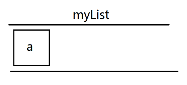
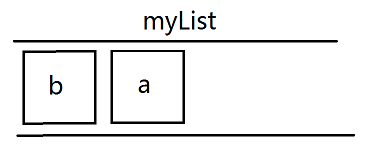
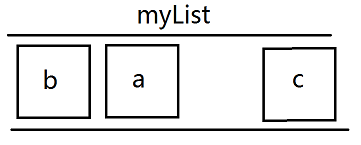

007-redis之list类型
list-列表操作
允许元素重复，可以添加一个元素到列表的头部（左边）或者尾部（右边）
1、存储
- 语法1:
lpush <key> <value>将元素加入列表左表 - 语法2:
rpush <key> <value>将元素加入列表右边 比如下面的场景:lpush myList a
lpush myList b

rpush myList c

最终的队列为b a c
支持一次添加多个字符串
lpush myList a b c
比如上面，虽然是一句，但是添加也是一个字符串一个字符串添加的。先添加a，再添加b，最后添加c。所以在redis中顺序是c b a
2、获取
语法: lrange <key> <start> <end>
获取key的内容，范围是start到end。下标0开始，end=-1的时候表示到结尾
lrange myList 0 -1
2、删除
- 语法1:
lpop <key>删除列表最左边的元素，并将元素返回 - 语法2:
rpop <key>删除列表最右边的元素，并将元素返回 比如上面队列的b a clpop myList // 最左边的b被删除，并返回b rpop myList // 最右边的c被删除，并返回c